Sequence資料結構: “Fake” Segment Tree
“Fake” Segment Tree【尚無正式名稱】
此資料結構由競賽選手發明，沒有發表為正式的學術論文。目前發現最早出現於Baltic OI 2001: Mars Maps，官方解答提供了此資料結構的程式碼。
此資料結構最初沒有特定名稱。傳入中國之後，競賽選手將名稱定調為Segment Tree，創造大量相關題型，例如SPOJ: GSS3，令Segment Tree之名稱被發揚光大。然而「Segment Tree」是既有的資料結構名稱，所以此資料結構勢必另取他名，以免混淆。
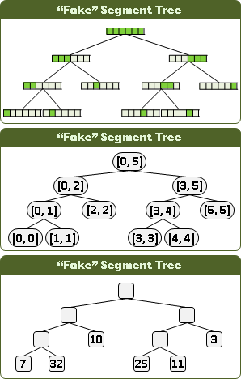建立資料結構
遞迴二分區間，樹葉存放數列，一個樹葉儲存一項；非樹葉存放擴充資訊，諸如區間總和、區間最大值、區間最小值。
節點最多是2N-1個，空間複雜度為O(N)，時間複雜度為O(N)。N為數列長度。
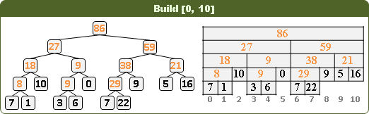更新第k項、區間總和、區間最大值、區間最小值
類似二元搜尋樹，時間複雜度為樹的深度O(logN)。
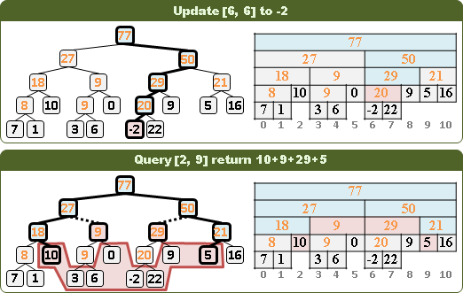UVa 11297 12299
插入第k項、刪除第k項
不負責任地交給讀者。
任意區間的最大（小）區間和
不負責任地交給讀者。
ICPC 3938
推廣到高維度
偽線段樹可以推廣到高維度，從一維數列變成二維陣列、三維陣列。二維偽線段樹，是先製作一棵第一維度的偽線段樹（稱作X樹），然後每個節點各自接上一棵第二維度的偽線段樹（稱作Y樹）。中文網路稱作「樹套樹」。
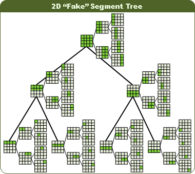UVa 12698
更新區間：楔子
偽線段樹也可以更新區間。首先簡化問題，把數值改成顏色。如果區間不是相同顏色，就繼續遞迴對半分割下去。如果區間是相同顏色，暫且不分割！
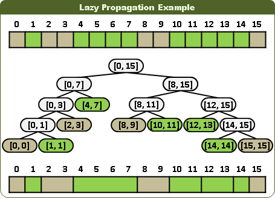更新第k項，有三大步驟：一、搜尋之時，原有顏色分離，挪往下層。二、就位之時，直接覆蓋顏色，刪除子樹（或者無視子樹）。三、回溯之時，相同顏色合併，挪往上層。
此番技巧尚未有正式名稱，英文網路稱作「lazy propagation」，中文網路稱作「延遲標記」。
 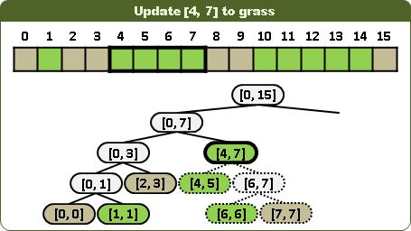
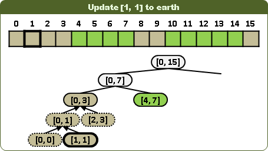
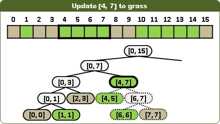
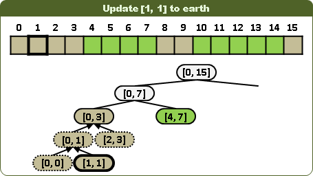
更新區間：視情況左右子樹都得走，並分割更新區間。
查詢第k項：一旦遭遇顏色，即得答案，不必深入子孫。
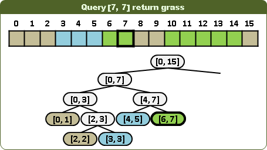查詢區間顏色是否一致：視情況左右子樹都得走，並分割查詢區間。當節點區間大於等於查詢區間時，一旦遭遇顏色，即可判斷異同，不必深入子孫。當節點區間小於等於查詢區間時，一旦遭遇無色，即得答案為否，不必深入子孫。不能推廣到高維度。
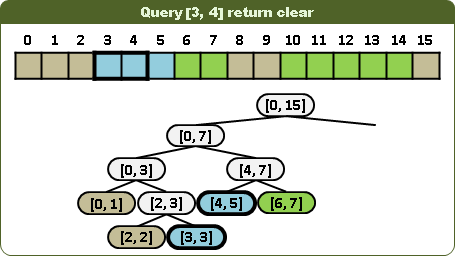 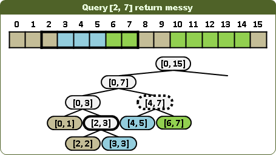這四項操作的時間複雜度都是O(logN)。
更新區間：統統改為一數值
更新第k項、更新區間：運用「lazy propagation」技巧，凡遭遇已改值的區間，則分離挪往下層。
查詢第k項、查詢區間：凡遭遇已改值的區間，即得答案，不必深入子孫。
查詢區間不能推廣到高維度。
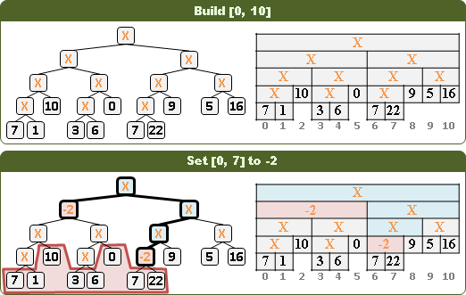更新區間：統統增減一數值
更新第k項、更新區間：直接在對應區間累計增減值。
查詢第k項：累加路線上的增減值。
似乎無法查詢區間。
這似乎也被歸類於「lazy propagation」技巧。
UVa 11402 11992
Bottom-up “Fake” Segment Tree【尚無正式名稱】
BST和FST要實作很久，趕時間的競賽選手避之唯恐不及。如果不需要插入第k項、刪除第k項，只需要更新第k項、查詢區間，此時就可以採用特殊資料結構，編寫較少程式碼。
只能更新第k項、查詢區間：Bottom-up “Fake” Segment Tree 只能更新第k項、查詢區間總和：Binary Indexed Tree 只能更新第k項、查詢區間極值：Sparse Table
2010年由競賽選手清华大学张昆玮《统计的力量——线段树全接触》提出。我不清楚是否已有正式學術論文。
讀者須具備「Bitwise Operation」基礎。